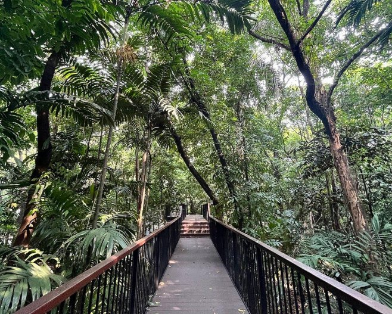
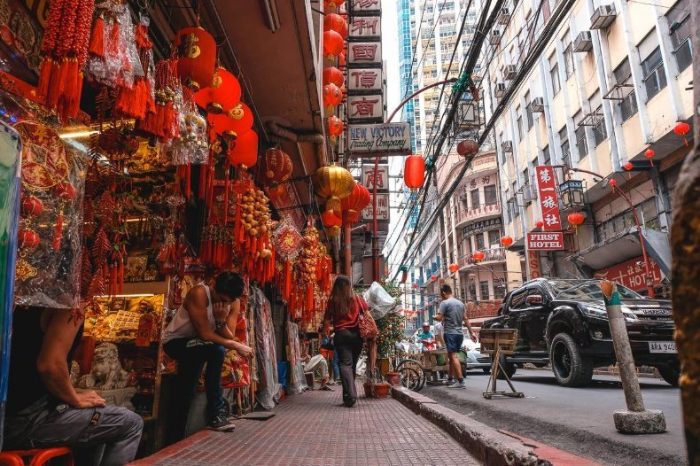
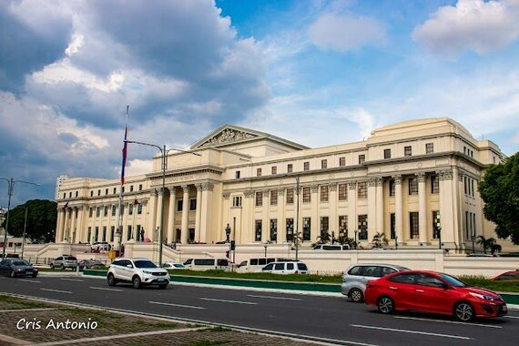
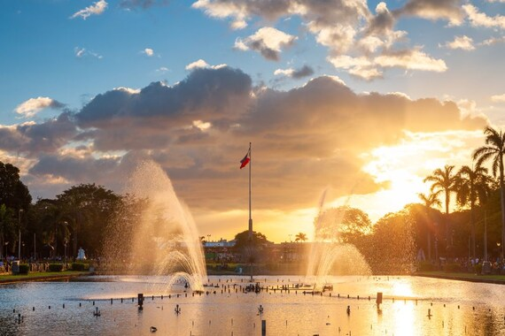
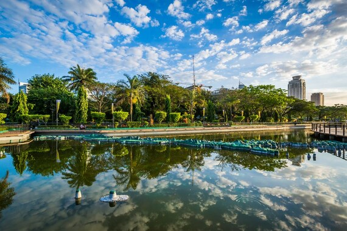

HISTORY & CULTURE
Intramuros
Walk through the historic walled city and discover architecture, heritage sites, and stories from Manila's past.
Explore destination →YOUR GUIDE TO THE CITY
From historic streets and remarkable museums to peaceful parks and unforgettable local food, explore the places that make Manila worth discovering.
Explore destinations
Start your journey in historic Manila.
PLACES WORTH EXPLORING
Discover landmarks, cultural treasures, and green spaces for your next Manila adventure.
HISTORY & CULTURE
Walk through the historic walled city and discover architecture, heritage sites, and stories from Manila's past.
Explore destination →
NATURE & RELAXATION
Take a break from busy city streets in a green urban space filled with trees and quiet pathways.
Explore destination →
FOOD & LOCAL CULTURE
Explore lively streets, local shops, and a food scene shaped by Filipino-Chinese heritage.
Explore destination →
ART & HERITAGE
Discover Filipino art, history, culture, and natural heritage through museum collections.
Explore destination →
HISTORIC LANDMARK
Explore a historic fortress within Intramuros and learn about an important chapter in Philippine history.
Explore destination →
PARKS & LANDMARKS
Visit a well-known city landmark for open spaces, leisurely walks, and a deeper connection to Philippine history.
Explore destination →
PLAN YOUR ADVENTURE
For outdoor walks and sightseeing, mornings are often more comfortable than the hotter hours of the day. Weekdays may also feel less crowded at some attractions.
Manila's dry season generally falls around November to April, while the rainy season commonly runs from May to October. Weather can vary, so check the forecast before planning an outdoor visit.
Museum schedules, attraction hours, and admission policies can change. Check official visitor information before leaving.
Check the weather forecast →A TASTE OF MANILA
Find your next food stop, from traditional favorites to lively neighborhood food streets.
FOOD & CULTURE
Make time to explore Binondo's food shops, restaurants, and street-side discoveries. It is a great starting point for anyone who wants to experience Manila through its local food culture.
Explore BinondoYOUR NEXT DISCOVERY STARTS HERE
Save a place for your next trip and keep discovering the stories, sights, and flavors of Manila.
Suggest a destination